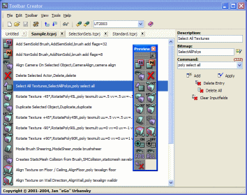

Toolbar Creator
Toolbar Creator is an external utility for UnrealEd created by Jan "eGo" Urbansky. It allows easy management of Custom Toolbox Buttons for the UnrealEd Toolbox. Version 2.11 is currently available at http://www.ego-creations.de |

|
Features
- Create, Open, Saving of toolbar projects
- Add, Edit, Delete & Sort of entries
- Build & Remove the user defined toolbar (direct editing of UnrealEd.ini, no manually edits required)
- Assign an UnrealED command from a built-in list of over 300 commands
- Easy-to-use interface to add new bitmaps
- Preview your buttons in a mock up UnrealEd toolbar
- Language support
- Support of several installations of UnrealEd
- Works with UnrealEd 2.0 (425) and higher
Last Changes
Changes since 2.1
- added: file format support for ExtendedToolbar projects
Changes since 2.0
- added: project tabs (more then one project can be edited now)
- added: command and template manager
- added: three help files in english, french and german language
- changed: options dialog rewritten
- changed: game selection for building or reloading any toolbar
- changed: localization support rewritten
Downloads
[Toolbar Creator 2.11] (build 03.11.2004)
Discussion
Legal: This is for UED2 or 3?
Jan: some UEd3 commands (30 or so) doesn't work in UEd2 but the most are for both Editors
Tarquin: Do you have a list?  and are there any commands new to UEd 3?
and are there any commands new to UEd 3?
Jan: I've a list (only TXT) but what's new and what's not isn't commented. But I'll create a new list with separated commands for both versions and I'll release it later if you want.
Tarquin: If you know which ones don't work in UED3, could you grab the list on UnrealEd 2 Console, copy it to UnrealEd Console & just kill the ones which no longer work?
Jan: Yes, I'll do it and I'll release an UnrealEd Command Reference document later
Jan: New version is now available for download
Tarquin: Hi Jan. I just got your email about 2 weeks late – my PU mail has been down for ages. Do you still need help testing the latest version?
Jan: This version is out since some weeks. No more tests required. Contact me with an other mail if I have any questions...PU sucks.
Dr.AwkwArD: This may be a little out of place, but since I was gonna use Toolbar Creator to do it... Basically, I'm wondering of there's a way for me to create a button that would embed a user-specified package into MyLevel. I know that I can explicitly define which package will be loaded (as that's a standard console command), but is there a way for me to allow the level designer to browse-for/type-the-name-of the package to be embedded? This just seems like it'd be a rather handy tool...
Tarquin: Toolbar commands are limited to what you can do in the console. So basically, no.
Dr.AwkwArD: That's what I figured. What a shame. Epic gave us a pretty cool tool, but I sure would be nice to have just a little more flexibility. Ah well...